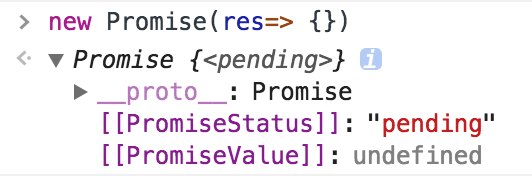

背景
在ES6流行之前，我们处理异步的方法一般有 事件模式， 回调模式等。
事件模式
用户点击按钮或按下键盘上的按钮会触发类似 onClick这样的事件，他会向任务队列添加一个新任务来响应用户的操作。
直到事件触发时才执行事件处理程序，且正常执行时上下文与定义时相同1
2
3
4let btn = document.getElementById('btn1');
btn.onclick = function(event) {
console.log(event);
}
1 | import iEvent from 'event'; |
事件模型适用于处理简单的交互，如果多个独立的异步调用连接在一起会使应用变得更加复杂。
而且要追踪每个事件的事件目标，比如 我先点击 btn1 再给 btn1绑定事件，或者先 emit 再 on 都会不起作用。
回调模式
为Java打Call
为PHP打Call
为javascript打CallBack 为Go打Call…
1 | method1(function(data) { |
回调模式虽然是js的一大精髓，但是写着写着可能会因为嵌套太多的回调函数，陷入回调地狱 —— 超级金字塔
而且如果要处理类似 两个操作都执行完通知你 或者有一个操作执行完就通知你 那么情况可能会变得比较麻烦
基础知识
简单使用
1 | const promise = new Promise((res, rej)=> { |
Promise 规范
Promise 规范有很多，如 Promise/A，Promise/B，和Promise/A升级版 => Promise/A+
在这里统一一下 以下所有 resolved 都指fulfilled。
- Promise 本质是一个状态机。每个 promise 只能是 3 种状态中的一种：pending、resolved 或 rejected。状态转变只能是 pending -> resolved 或者 pending -> rejected。状态转变不可逆。
- then 方法可以被同一个 promise 调用多次。
- then 方法必须返回一个 新 promise。
三个状态，状态是不可逆的
可以在 chrome 控制台看到内部属性 [[PromiseStatus]] 状态值
- pending： Promise的初始状态，也就是未被fulfilled或者rejected的状态。
- resolved： 意味着promise代指的操作已经成功完成。
- rejected：意味着promise代指的操作由于某些原因失败。

then
所有的 Promise 都有 then(onResolve, onReject) 方法，接受两个参数，
第一个是当Promise 状态变为 resolved 时调用的函数，与异步操作相关的值会传递给该函数
第二个是当Promise 状态变为 rejected 时调用的函数，与失败状态相关（报错）会传递给该函数
1 | const promise = new Promose(res=> res(1)) |
1 | const promise = new Promise(res=> res(1)) |
因为promise每次都会返回一个新的promise 所以支持链式写法，上一个 then 的返回值会当成 下一个then的参数1
new Promose(res=> res(1)).then(val=> ++val).then(val=> ++val).then(val=> ++val)
错误情况
- 在
Promise(fn)fn执行错误
每个执行器内部都隐含一个 try...catch...块1
2
3
4const promise = new Promise(function(res, rej) {
throw new Error('喵喵喵')
})
promise.catch(err=> console.warn(err))
以上代码等同于1
2
3
4
5
6
7
8const promise = new Promise(function(res, rej) {
try {
throw new Error('喵喵喵')
} catch(ex) {
rej(ex)
}
})
promise.then(null, err=> console.warn(err))
此处可以看出 promise.catch 其实是 promise.then(null, catchFn) 的一个语法糖
- then 函数内部错误
1 | const promise = new Promise(res=> res(1)) |
这里可以简单的理解为 then 内部会生成一个 Promise 示例，把函数体丢到Promise 里去执行，执行完结果当成 res 方法的参数，出错则调用 rej
1 | const promise = new Promise(res=> res(1)) |
.catch && then(null, catchFn) 不能对后续的报错进行捕获
1 | const promise = new Promise(res=> res(1)) |
所以一般会在 Promise 的最末端添加一个 catch 对前面可能出现的问题进行处理
thenable
上面说了那么多关于 then 的使用，其实只要实现了上述 then 功能的对象都可以叫 thenable。
所有的 Promise 都是 thenable 但是不一定所有有then 方法的对象都叫 thenable。1
2
3
4
5var thenable = {
then: function(res, rej) {
res(1)
}
}
至于 thenable 有什么用 请往下看
resolve
上述说到的 Promise 用法，都是 创建一个未完成状态，执行一些操作之后才从 pending 转变为 resolved 或 rejected
那么可以直接创建一个完成状态的 Promise 吗？ 这里就要用到 静态方法上面的 resolve。
- Promise.resolve(promise);
- Promise.resolve(thenable);
- Promise.resolve(object);
参数为 promise 时，返回的也是该promise
1 | const promise = new Promise(()=> {}) |
参数为thenable 时，返回标准的promise对象，这个对象有then方法
这里是 resolve 方法用的最多的地方了
平时工作用到最多的 thenable 恐怕就是 jQ 或 zepto 的 ajax
那么我们如果要把他转为标准的 promise 怎么办呢？ 比如 zepto 的 ajax 返回的就没有 .catche 方法，而是 .fail
这里如果有必要 我们可以做一层封装，把他转变为标准的格式 拥抱未来！！！1
2
3
4const ajax = $.ajax({ url, data })
Promise.resolve(ajax)
.then(response=> {})
.catch(err=> console.warn(err))
参数是其他值的情况，会返回一个状态为 resolved 的 promise。终值为传入的值
1 | Promise.resolve({name: "Jsonz"}) |
reject
Promise.reject 用法与 Promise.resolve 类似 这里不再赘述
多个情况处理
开头的时候说了，如果要处理两个及以上的异步操作：
- 多个都完成时通知你
- 有一个完成时通知你
那么回调就显得很尴尬，这里 Promise 提供了两个方法来满足你这种小需求
all
业务上经常会有情况是 要等a接口与b接口的数据一起回来才做操作 那么可以用到静态方法 Promise.all
Promise.all 会接受一个 Array 类似的参数，里面是Promise 类型， 返回一个新的Promise 这里取名 PromiseAll
当所有的Promise 都变成 resolved 时，会将 PromiseAll 的状态改为 resolved 参数为每个 promise 的终值
如果有一个Promise 为 rejected， 那么 PromiseAll 会直接变为 rejected 状态 参数为 首个变为 rejected 状态的错误信息
1 | const p1 = new Promise(res=> res(1)) |
race
Promise.race 对应的是 有一个完成时通知你 这种状态，用法与参数与 all 类似
但是 Promise.race 的参数为第一个转为 resolved 状态的终值
继承Promise改造
如果我们要对原生的 Promise 进行改造，比如添加 success() 或 failure() 方法，那么我们可以直接继承他创建一个新的 JsonzPromise1
2
3
4
5
6
7
8
9
10class JsonzPromise extends Promise {
success(resolve, reject) {
return this.then(resolve, reject)
}
failure(reject) {
return this.catch(reject)
}
}
new JsonzPromise((res, rej)=> res(1))
.success(val=> console.log(val));
全局的rejected状态处理
1 | window.onunhandledrejection = function(e) { |
node 则是在 process 绑定监听
氮素！！！！ 不知道为何还没跑过成功的demo….
后记
emmmmmm 贴出一些比较好的教程吧
- 深入理解ES6 Promise 篇章
- javascript - Promise 迷你书
- Promise/A+ 规范中文
- 第二期实现自己的 Promise 参考1 参考2 参考3 参考4